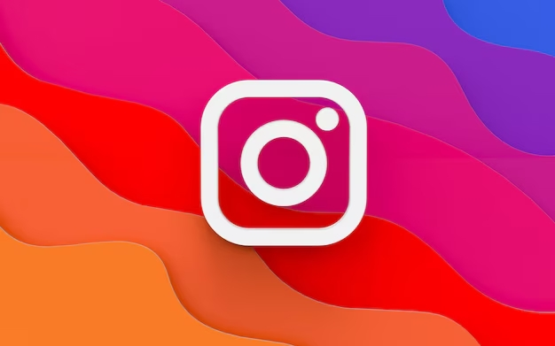

Compte Instagram

Contexte
Gestion d'un compte Instagram de divertissement.
Compétences mobilisées
Reflexion, prise de vue, retouche, programmation, publication, partage, communication.
Le projet en détail
Depuis plusieurs années, je me passionne pour la pop culture et les jeux vidéo. En 2025, j'ai décidé de partager cette passion sur un compte Instagram neuf, @kims_12_, afin de lui créer l'ambiance nécessaire. J'y partage mes sorties, mes trouvailles et mes expériences.
Création de contenu. Chaque publication demande une réflexion sur le sujet et sur la manière de le mettre en valeur : prise de vue avec mon smartphone, composition, puis retouche sous Photoshop pour obtenir un rendu cohérent d'un post à l'autre.
Ligne éditoriale. J'accorde une attention particulière à l'ambiance du compte : choix de la musique, rédaction des légendes et des hashtags, partage en story pour animer le compte entre deux publications.
Organisation. Pour publier régulièrement, je m'appuie sur un planning de publication, qui me permet d'anticiper les contenus et de garder un rythme constant. Je publie après des évènements de pop culture, ou lors de sorties. Puis comble l'attente par des stories et contenus à la une.
Ce que ce projet m'apporte. C'est un terrain d'expérimentation en community management, en création visuelle et en gestion d'une identité éditoriale, que je peux transposer aux comptes des organisations que j'accompagne.